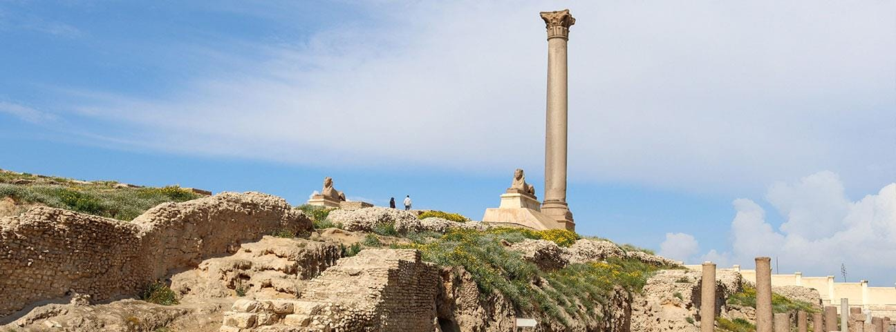
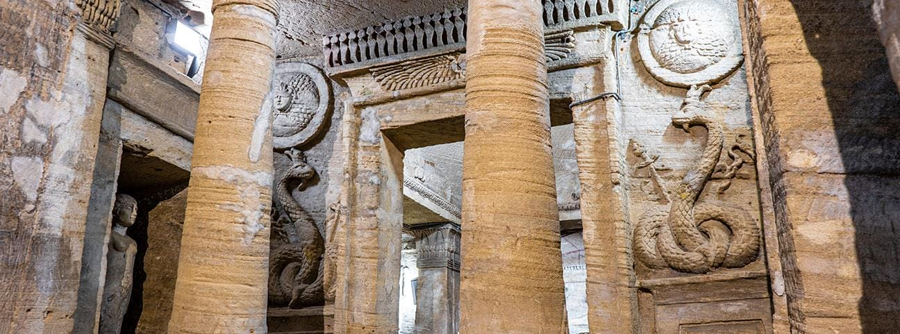

Swept over Egypt with the arrival of Alexander the Great’s forces in 332 BC. The establishment of the Ptolemaic Kingdom led to the merging of Greek and ancient Egyptian culture, along with mutual influences in science and art that led to incredible advances. The Roman era continued Egypt’s multiculturalism by bringing the far-reaching Roman artistic influences into the existing ones.

Which became the ancient Ptolemaic empire’s seat of power. Diocletian’s Column, known as Pompey’s Pillar, survives as a towering and impressive herald to the past. At the Roman-era Kom al-Shuqafa Catacombs, you’ll be able to see the beautiful blending of ancient Egyptian and Greek beliefs on the paintings and wall reliefs, along with some Roman fashion styles. The Kom al-Dikka Roman Theater is also a testament to the influence of art and culture during this time.